Introduction to MSK Anatomy
- Anatomical position: standing, with the face, palms and toes forward. Supine is that position lying on the back; prone is lying on the stomach. The arm runs shoulder to elbow and the forearm elbow to wrist; the thigh runs hip to knee and the leg knee to ankle.
- Afferents come in through the dorsal root, with their cell bodies in the dorsal root ganglion. Efferents leave through the ventral root. The dorsal ramus supplies only the deep back muscles and the skin over the back; the ventral ramus supplies everything else. A reflex arc skips the brain: afferent → interneuron → efferent.
- A dermatome is the patch of skin, and a myotome the muscle, supplied by one spinal nerve. Neighbouring dermatomes overlap, so test in the middle of a dermatome, never on a border.
- Isometric = contraction with no change in length. Concentric = the muscle shortens. Eccentric = it lengthens while still contracting. Open kinetic chain = the limb moves free in space; closed = the limb is fixed.
- Synovial joints have hyaline cartilage, a fibrous capsule and a synovial membrane. Joint pain comes from the capsule, ligaments and bone, because cartilage and synovium are poorly innervated. Hilton's law: a joint's sensory supply comes from the nerves of the muscles that act on it. Stability: bone shape > ligaments > muscles.
Learning Objectives
Review these to prepare for the MSK block:
- Foundations in anatomy: anatomical terminology for MSK; terms of movement.
- Somatic nervous system: the somatic nerve pathway; the reflex arc; dermatomes and myotomes.
- Types of muscle contraction: isotonic (eccentric, concentric) and isometric.
- Kinetic chain: open and closed.
- Joints: characteristics of synovial joints; the laws of joints.
- The skeleton: axial and appendicular; bony terminology.
Dr. Charys Martin, anatomy. A concept reference for the whole block: twelve short recordings (about an hour in total, though Elentra lists 97 minutes) with knowledge checks in between. Most of it is review from Foundations of Medicine, but Dr. Martin warns that the terms here “will be referred to throughout the course”.
Anatomical Terminology
Every description of the body assumes it is in anatomical position, so everyone pictures the same thing.
| Term | Meaning |
|---|---|
| Anatomical position | Standing erect, feet flat with the toes forward, arms at the sides with the palms forward, face forward |
| Supine | Anatomical position lying on the back |
| Prone | Anatomical position lying on the stomach |
| Axilla (axillary fossa) | The armpit. The anterior axillary fold is pectoralis major; there is a posterior fold too. The folds give the axillary lines used as landmarks. |
| Arm vs forearm | Arm = shoulder to elbow only. Forearm = elbow to wrist. |
| Cubital fossa | The front of the elbow, where many procedures and assessments happen |
| Inguinal ligament | The groin fold between abdomen and thigh, running from the ASIS to the pubic tubercle |
| Thigh vs leg | Thigh = hip to knee. Leg = knee to ankle only, not the whole lower limb. |
| Popliteal fossa | The hollow at the back of the knee |
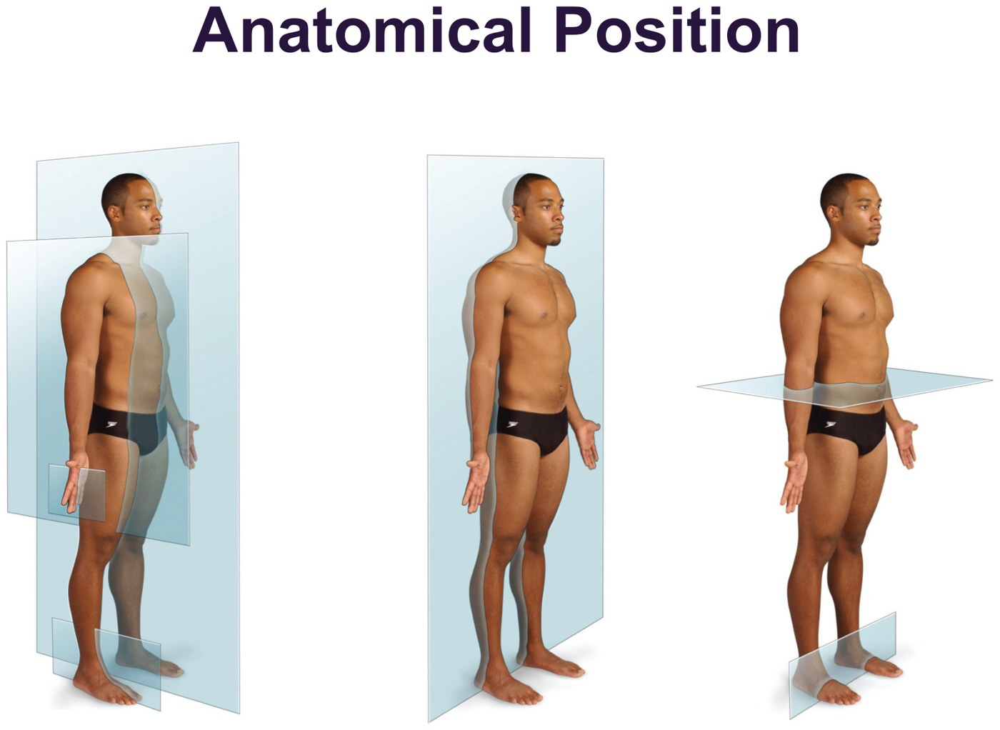
Terms of Movement
These describe movement away from anatomical position.
| Movement | Definition | Example |
|---|---|---|
| Flexion / extension | Decreasing / increasing the angle at a joint | Lifting / lowering a biceps curl |
| Abduction / adduction | Moving away from / toward the midline | Jumping jack, out / in |
| Circumduction | Flexion, abduction, extension and adduction combined | Arm circles |
| Retraction / protraction | Scapulae brought together / spread apart | Squeezing the shoulder blades back / reaching forward |
| Elevation / depression | Scapulae raised toward the head / lowered | A shrug |
| Plantarflexion / dorsiflexion | Pointing the toes / bringing the toes toward the shin | Up on tiptoes to reach a shelf / heel walking |
| Supination / pronation | Rotating the palm to face forward or up / back or down | Supinated hand “holds a bowl of soup”; hands flat on a keyboard are pronated |
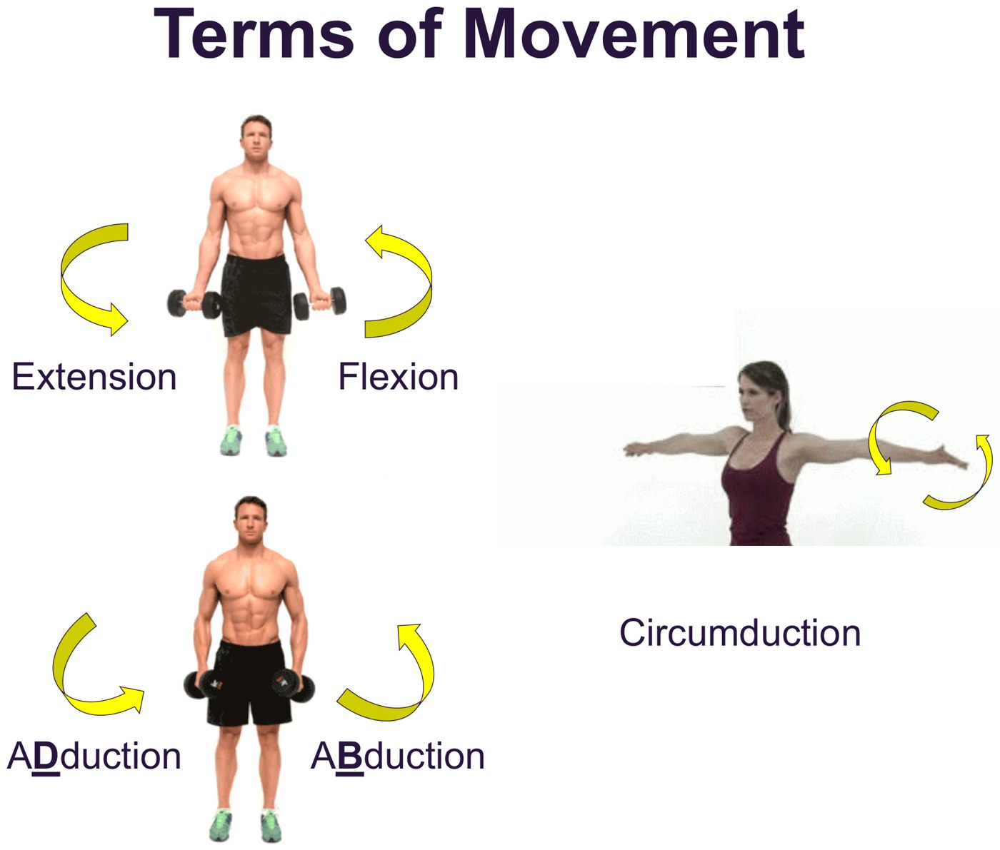
Movements at the elbow and shoulder. Flexion and extension at the elbow, abduction and adduction at the shoulder, and circumduction, which combines all four. Slide from the deck.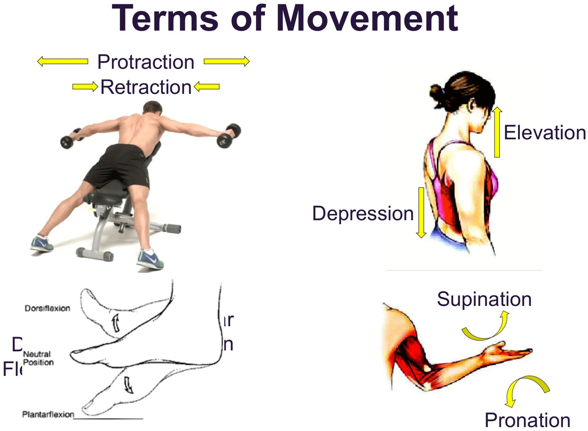
The tricky ones at the scapula, ankle and forearm. Retraction pulls the scapulae together, elevation shrugs them up, plantarflexion points the toes, and supination turns the palm up. Slide from the deck.In the “Anatomical Movements” review quiz, the answer feedback for the biceps-curl question says protraction brings the scapulae together and retraction moves them apart. That is reversed. The slide, the recording and the later quiz feedback all agree: retraction = together, protraction = apart.
The Generic Spinal Nerve
All 31 spinal nerves, and some cranial nerves, carry somatic fibres to the body wall: the skin and its connective tissue, skeletal muscle and joints.
| Fibre | Direction | Carries |
|---|---|---|
| General sensory (afferent) | Toward the CNS, in through the dorsal root | Pain, temperature, pressure, touch and proprioception (knowing where your body is in space, from tendons, ligaments and joints) |
| General motor (efferent) | Away from the CNS, out through the ventral root | Impulses to skeletal muscle |
| Part | What it is |
|---|---|
| Dorsal root | The doorway into the CNS for sensory afferents |
| Dorsal root ganglion | The swelling on the dorsal root that holds the cell bodies of the sensory afferents |
| Ventral root | The doorway out of the CNS for motor efferents |
| Spinal nerve | Just the short segment after the roots join and before the rami split |
| Dorsal ramus | Mixed. Supplies only the deep muscles of the back and the skin over the back. |
| Ventral ramus | Mixed. Supplies everything else: back of the head, neck, upper limb, trunk wall, perineum and lower limb. |
| Grey horns | Dorsal (posterior, sensory), ventral (anterior, motor) and the small intermediolateral horn on the side |
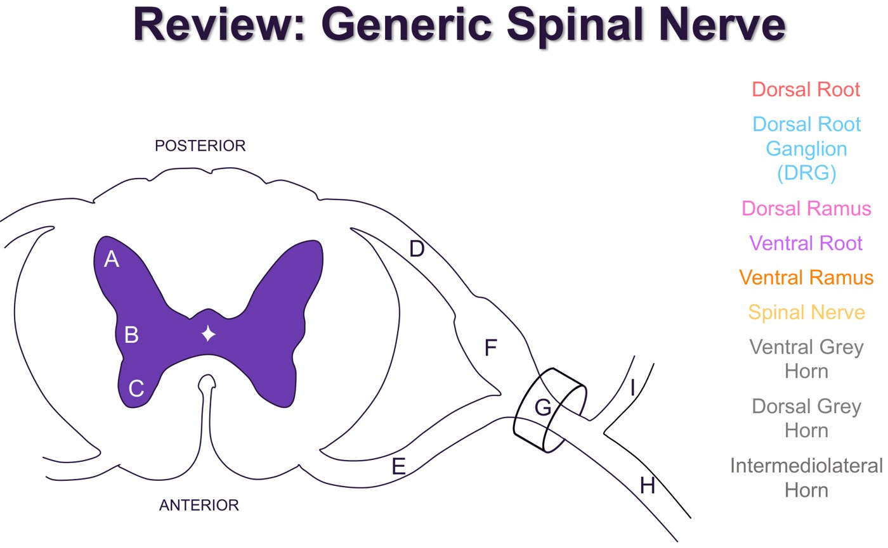
The Somatic Nerve Pathway and the Reflex Arc
Dr. Martin's example: a mosquito lands on your arm and you swat it away.
It travels in the ventral ramus (the arm is not the back), then the spinal nerve, then the dorsal root. Its cell body sits in the DRG.
It synapses with a second-order sensory neuron that ascends to the brain, and the brain decides to swat.
The UMN descends to the right spinal level and synapses with the lower motor neuron (the general motor efferent) in the ventral horn.
Ventral root → spinal nerve → ventral ramus → arm muscles. Only fibres to the deep back muscles leave through the dorsal ramus.
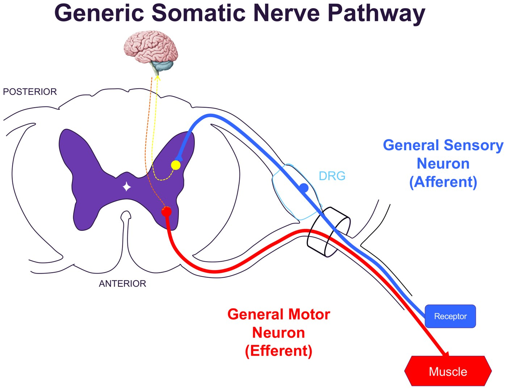
The full pathway. The afferent (blue) goes from the receptor through the DRG into the dorsal horn and up to the brain. The decision comes back down to the ventral horn, and the efferent (red) runs out to the muscle. Slide from the deck.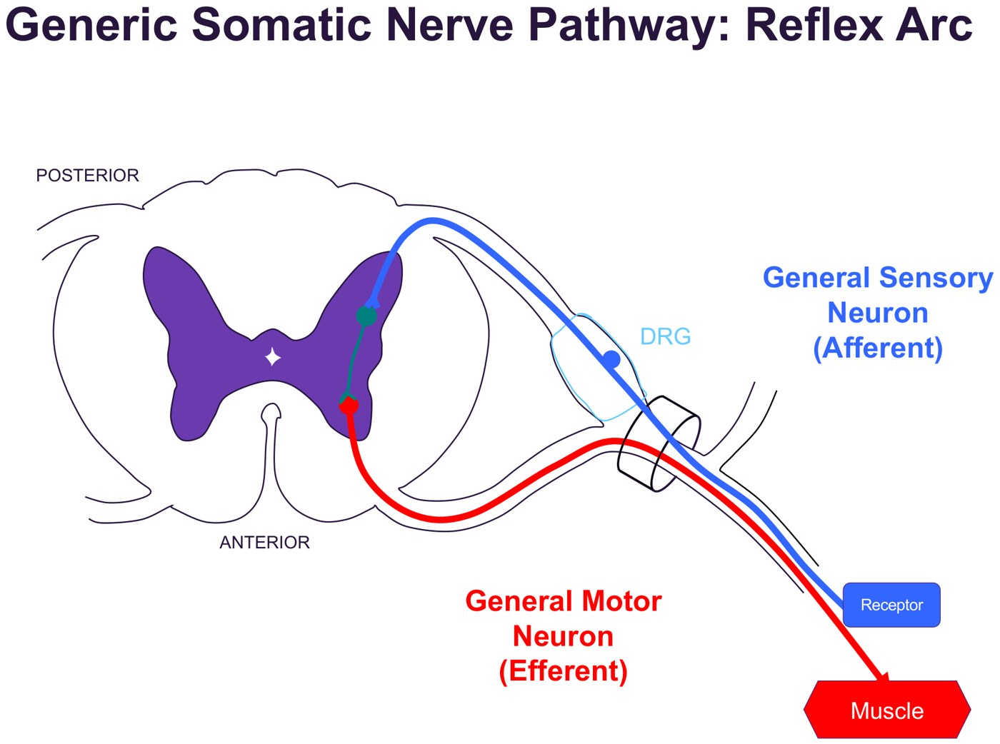
The reflex arc short-circuits it inside the cord. Grabbing a hot marshmallow off the stick, the afferent synapses on an interneuron in the dorsal grey horn, which fires the efferent in the ventral horn. No upper motor neuron, and no thinking. Slide from the deck.Dermatomes and Myotomes
| Step | What happens |
|---|---|
| Somites | Paired blocks of paraxial mesoderm, each supplied by a single spinal nerve |
| Dermomyotome | Splits into a dermatome, which forms the skin and subcutaneous tissue of the body wall, and a myotome, which forms the muscles of the axial skeleton, body wall and limbs |
| Myotomes fuse | Several myotomes elongate and fuse into one muscle, so a muscle gets more than one spinal segment (e.g. C5 and C6). The nerves also merge and split again in the plexuses. |
| Dermatomes fuse | On the limbs the neat embryonic stripes become blocks, and neighbouring dermatomes overlap |
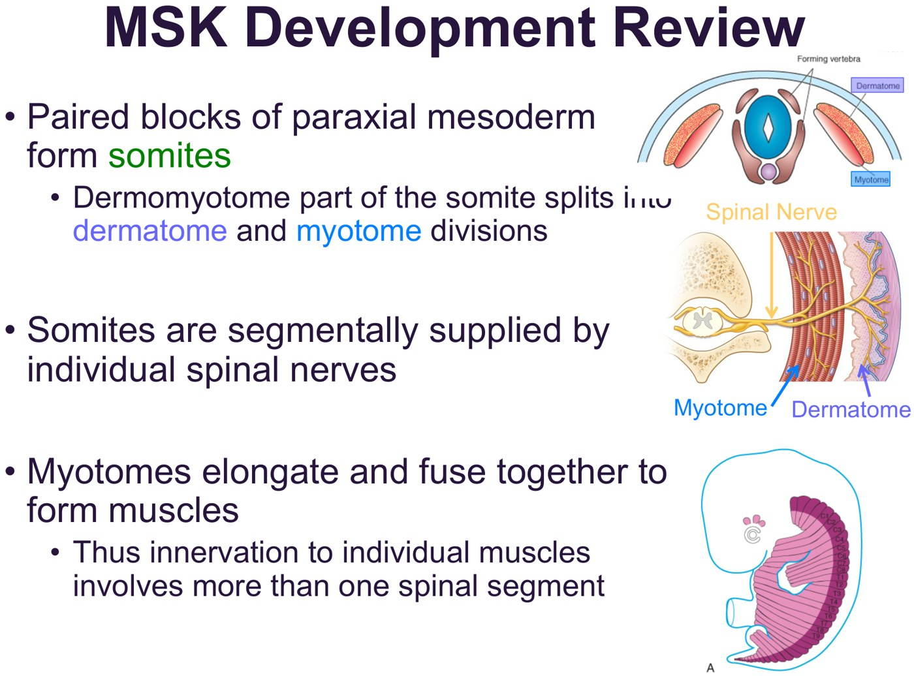
Why one muscle has several roots. Each somite brings its own spinal nerve, and myotomes fuse to make muscles. Slide from the deck.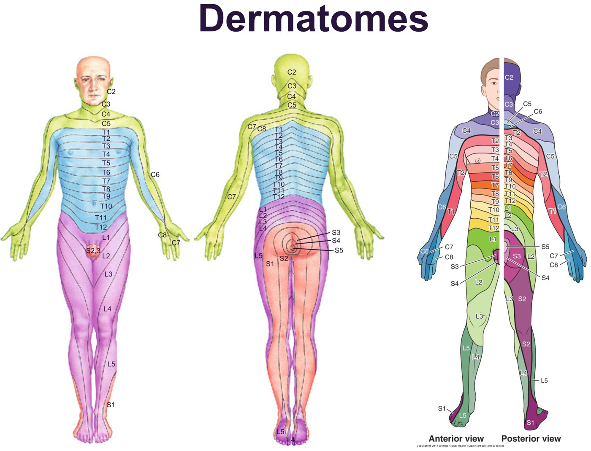
Embryology vs the clinic. The left maps are the neat segmental stripes. The right is Foerster's map, built from anatomy plus clinical experience, and is the one used for testing. Slide from the deck.A dermatome is a specific zone of skin that, developmentally, was supplied by a single spinal nerve. Near its edges the neighbouring nerves overlap. So never test on a border: on the mid-thigh you can't tell whether you're testing L2 or L3. Test in the middle of the territory. The course will show you the exact test sites as it goes.
The one place with no overlap is along the dark axial lines on the map, where non-adjacent segments meet (e.g. L3 next to S2 down the back of the leg). Overlap only happens between consecutive spinal segments.
Types of Muscle Contraction
Muscles can only shorten, so they only ever pull bones together. Different contraction types are what control a joint through a whole movement.
| Type | Length | Example |
|---|---|---|
| Isometric | No change. Sarcomeres shorten to a point and hold. | Wall sit (quadriceps), plank |
| Isotonic: concentric | Shortens. The “typical” contraction. | Up phase of a biceps curl; up phase of a push-up (triceps) |
| Isotonic: eccentric | Lengthens while contracting. Some sarcomeres let go, others hold, giving controlled lowering. | Down phase of a curl; down phase of a squat (quadriceps); setting something heavy down instead of dropping it |
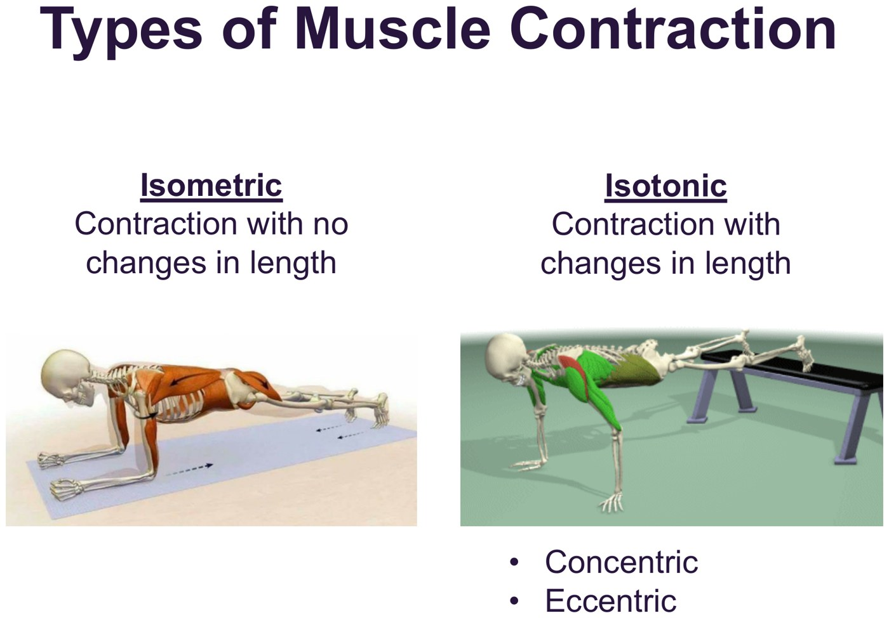
Open and Closed Kinetic Chain
| Open kinetic chain | Closed kinetic chain | |
|---|---|---|
| The limb | Free to move in space | Fixed, e.g. to the floor |
| Examples | Biceps curl, bench press, lifting a drink, raising your hand, swinging your legs while sitting, arms out to the side | Push-up, squat, standing up from a chair, pushing down on the chair to stand |
| What it demands | The rest of the body can be stabilized while one segment moves | Every joint in the chain must be held stable. Rotation at one link causes rotation at the next, all the way up. |
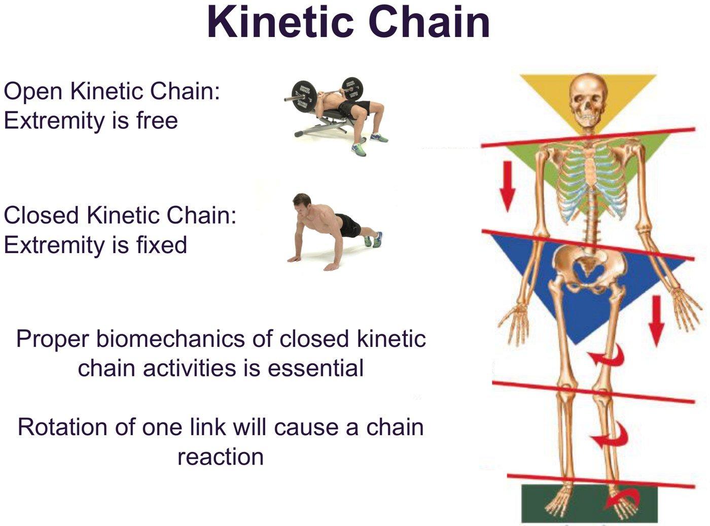
Synovial Joints
Most joints in MSK are synovial: the common, freely movable kind.
| Feature | Role |
|---|---|
| Hyaline (articular) cartilage | Covers the bone ends with a smooth, nearly frictionless surface |
| Fibrous joint capsule | Surrounds the joint and gives structural support. Intrinsic ligaments are thickenings of the capsule where it needs reinforcing. |
| Synovial membrane | Lines every inner surface not covered by cartilage and secretes synovial fluid (hyaluronic acid, egg-yolk consistency: “syn-ovia”) |
| Synovial fluid | Reduces friction, nourishes the cartilage, and absorbs some shock |
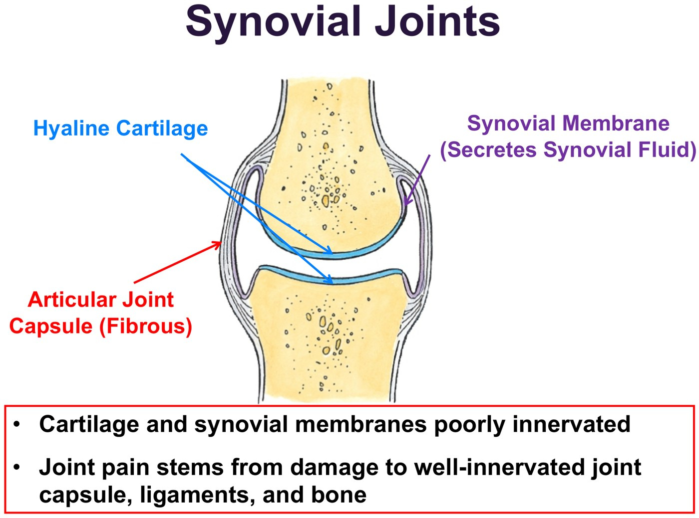
| Type | Axes | Example | Movement |
|---|---|---|---|
| Hinge | Uniaxial | Elbow | Flexion and extension only |
| Pivot | Uniaxial | C1 on C2; proximal and distal radioulnar joints | Rotation (pronation and supination) |
| Saddle | Biaxial | Thumb CMC | Flexion, extension, abduction, adduction, circumduction: the opposable thumb |
| Condyloid | Biaxial | MCP | Convex in concave: flexion, extension, abduction, adduction, circumduction |
| Plane | Uniaxial | AC joint | Gliding and sliding of two flat surfaces |
| Ball-and-socket | Multiaxial | Glenohumeral, hip | All of the above plus rotation |
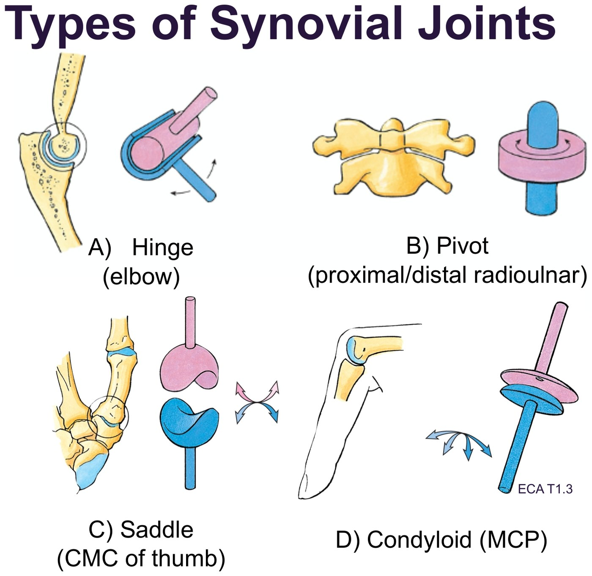
Hinge, pivot, saddle, condyloid, each beside a mechanical model of how it moves. Slide from the deck (ECA T1.3).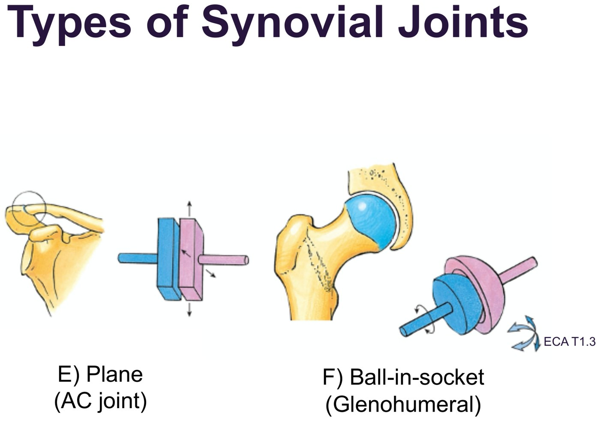
Plane (the AC joint) and ball-and-socket (glenohumeral; the hip is the other). Slide from the deck (ECA T1.3).The laws of joints
| Law | Meaning |
|---|---|
| Crossing = acting | Any muscle that crosses a joint acts on it, even if that isn't its main job. Biceps mainly flexes the elbow but also helps flex the shoulder. |
| Hilton's law | The sensory supply to a joint comes from the nerves supplying the muscles that act on that joint. |
| Stability | 1. Shape of the articulating surfaces (the primary factor) → 2. ligaments → 3. muscles (dynamic stability from tonic contraction) |
The femoral head sits deep in the acetabulum, like a ball in a bowl, so the bone shape alone makes the hip stable. The humeral head sits on the shallow glenoid fossa, “a plate with a small lip”. The knee is two bones stacked on top of each other, with a lot of mobility and little bony stability. Joints that can't rely on their bones lean on ligaments and muscles, and the stability of a joint decides how easily it is injured.
The Skeleton
A supportive framework that supports soft tissue, protects organs (the thoracic cage around the heart and lungs) and gives levers for muscles: the bones are the levers and the muscles pull on them. It is mostly bone, plus some cartilage (the costal cartilages and the pubic symphysis).
| Part | Bones | Key points |
|---|---|---|
| Axial skeleton | ||
| Skull | Many bones joined by sutures | Sutures barely move. The only freely movable joint is the TMJ. |
| Vertebral column | Five regions | Vertebrae get bigger going down as they carry more weight. The sacrum passes the load to the pelvis at the sacroiliac joints. The coccyx bears no weight and is tiny. |
| Sternum, ribs | 12 pairs of ribs | The upper ribs join the sternum through costal cartilage. Ribs 11 and 12 are floating. The clavicles also attach to the sternum. |
| Upper extremity | ||
| Pectoral girdle | Clavicle, scapula | The whole upper limb hangs off the axial skeleton by one small joint: the sternoclavicular. |
| Arm | Humerus | Proximally the glenohumeral joint; distally it meets the ulna and radius at the elbow |
| Forearm | Ulna (medial), radius (lateral) | The ulna is the elbow's hinge and plays only a minor role at the wrist. The radius, with its disc-shaped head, does the rotation at the radioulnar joints and forms most of the wrist. |
| Hand | 8 carpals, 5 metacarpals, phalanges | Three phalanges per digit, two in the thumb |
| Lower extremity | ||
| Pelvic girdle | Two pelvic bones | Joined to the sacrum by the SI joints, which barely move and are held by strong ligaments. Movement there (common in pregnancy) hurts. The two bones meet in front at the fibrocartilaginous pubic symphysis; each has an acetabulum for the hip. |
| Thigh | Femur | Much bigger than the humerus. The head joins the shaft by an angled neck, the usual site of a “broken hip”. |
| Patella | Sesamoid bone | Forms within the quadriceps tendon and acts as an extra pulley for more quad force |
| Leg | Tibia, fibula | The tibia bears the weight and forms most of the ankle. The slender fibula isn't part of the knee but completes the ankle. No movement between them, unlike the forearm. |
| Foot | 7 tarsals, metatarsals, phalanges | Three phalanges per toe, two in the big toe |
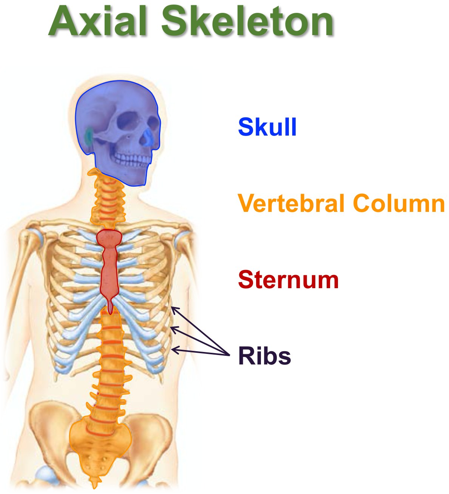
Axial skeleton: skull, vertebral column, sternum and ribs. Slide from the deck.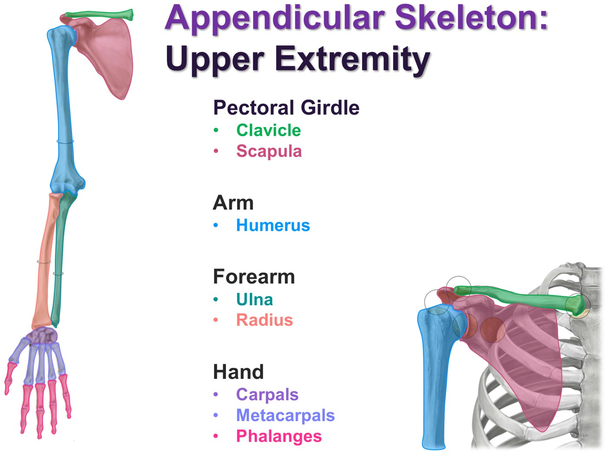
Upper extremity, from the pectoral girdle to the phalanges. Slide from the deck.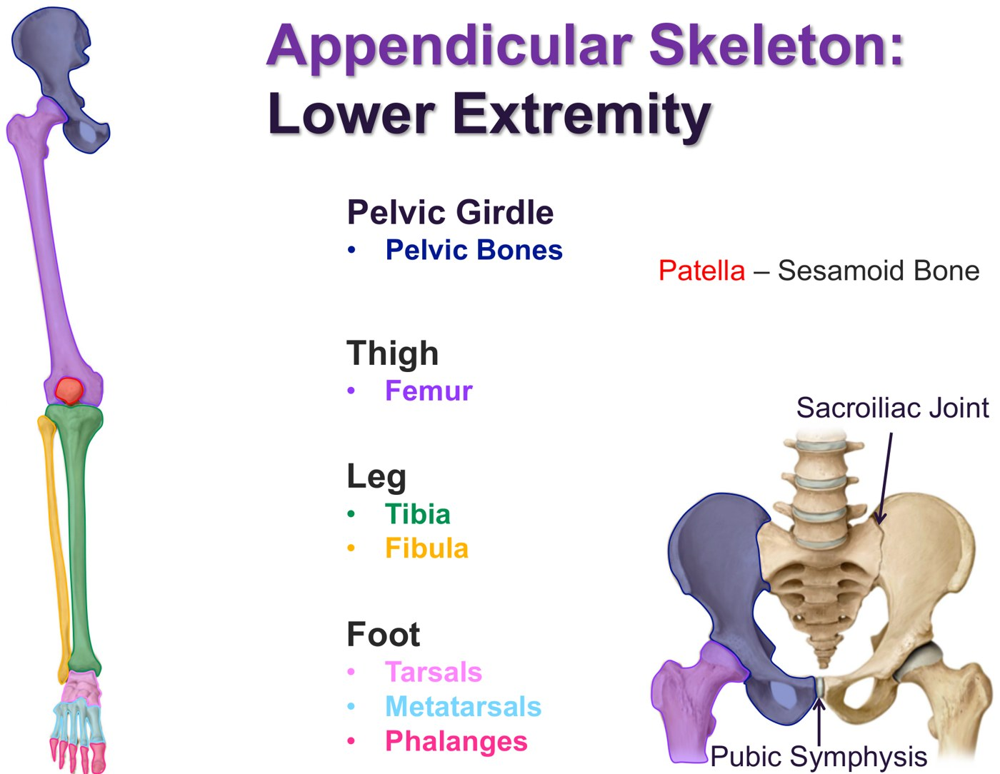
Lower extremity, with the patella (a sesamoid bone), the SI joint and the pubic symphysis. Slide from the deck.Bony Terminology
Group the names and they make sense. Most bumps on a bone are made by something pulling on it: a ligament or tendon tugs, and the bone ossifies there.
| Group | Term | Definition · example |
|---|---|---|
| Projections that form joints | ||
| Articular | Head | Expanded, rounded end that tapers to a neck |
| Facet | Small, smooth, nearly flat surface another bone sits on (vertebrae, ribs) | |
| Condyle | Rounded projection on the distal end of a bone (distal humerus) | |
| Projections for ligaments and tendons | ||
| Attachment | Process | Any bony prominence |
| Protuberance | A smaller projection from the surface | |
| Trochanter | Very large, blunt, irregular; only on the femur (greater and lesser) | |
| Tuberosity | Large rounded projection, often roughened (smaller than a trochanter) | |
| Tubercle | Small rounded projection (smaller than a tuberosity) | |
| Epicondyle | Raised area around a condyle. The medial epicondyle of the humerus is the bump on the inside of your elbow. | |
| Crest | Narrow, prominent ridge, often a long attachment | |
| Line | Small, narrow ridge, less prominent than a crest | |
| Spine | A slender, pointed ridge (the spine of the scapula) | |
| Depressions | ||
| Depressions | Groove | A furrow often occupied by a structure |
| Sulcus | A narrow crevice that holds a structure. The intertubercular sulcus (bicipital groove) carries the long head of biceps. | |
| Notch | An indentation at the edge (the suprascapular notch) | |
| Fossa | A basin-like depression that often forms a joint. The olecranon fossa receives the olecranon of the ulna. | |
| Openings and other | ||
| Openings | Foramen | Round or oval hole through bone |
| Fissure | Narrow, slit-like opening | |
| Meatus | A canal through thick bone (mostly in the skull) | |
| Other | Ramus | Where the bone changes angle (the ramus of the mandible) |
| Neck | The narrowing where the shaft meets a head | |
| Sinus | An air-filled cavity in bone lined by mucous membrane | |
Built from Dr. Charys Martin's “Introduction to MSK Anatomy” module: twelve recordings, the module's knowledge checks, and its 36-slide deck. The two bony-terminology tables are rebuilt as HTML tables rather than pasted, and the review-quiz slides are left out. Discrepancy flagged: the module's “Anatomical Movements” quiz feedback reverses protraction and retraction; the slide and recording are followed. The recording mentions “four cranial nerves” carrying somatic fibres; the slide's “some cranial nerves” is used. Caption corrections: adduction (“a deduction”), cubital fossa (“Cubano fossa”), popliteal fossa (“little fossa”), supination (“super nation”), myotome and dermatome (“Myatt homes”, “Dermott homes”), Foerster's map (“Forrester's”), intermediolateral (“intermediate lateral”), grey horn (“great horn”), carpometacarpal (“Capo metacarpal”), condyloid (“Lloyd”), girdle (“Sherlock”), ulna (“alma”), carpals (“capos”), sesamoid (“system wide”), tuberosity (“tube voracity”), olecranon fossa (“electron on fossa”) and meatus (“amenities”).